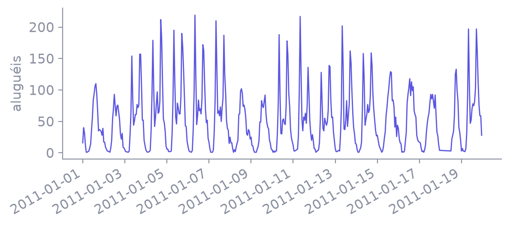
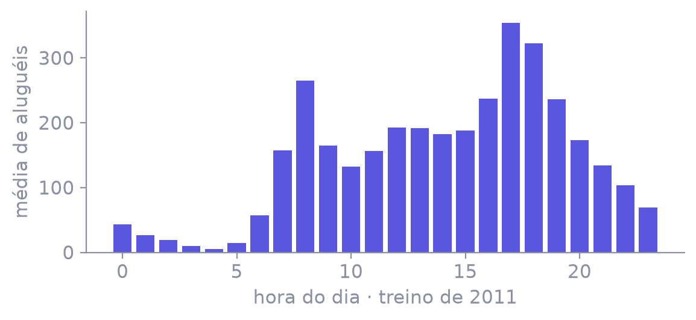

10.886 horas · dias 1 a 19 de cada mês 2011 ajusta, 2012 prova
Aula ML 05corte no tempobaseline semanal
→← · M índice · P PDF
Sortear o teste usa o futuro para prever o passado
O bloco da prova fica depois
Corte no tempoum bloco no passado ajusta. Um bloco no futuro prova. Nenhuma hora do teste está no meio do treino.
Pontos sorteadoso teste contém horas vizinhas às do treino. A métrica vê o que, na prática, ainda não aconteceu.
A segunda figura é a armadilha. O algoritmo desta aula é a reta da aula 2. O assunto novo é o corte.
cadernoBike Sharing Demand · train.csv · uma linha é uma hora
O arquivo não tem o mês inteiro

Dias 1 a 19 de cada mês, só. O corte e a baseline usam o timestamp que existe, sem completar os dias 20 a 31. Janeiro de 2011 já mostra o sobe-e-desce do dia.
cadernocasual + registered = count, nas 10.886 linhas
Duas colunas são o alvo escrito de outro jeito
casual
registered
soma
count
3
13
16
16
8
32
40
40
5
27
32
32
casual e registered ficam de fora. atemp também: é a temperatura sentida, colada em temp. O modelo usa temp.
cadernoNenhum train_test_split neste caminho
2011 ajusta. 2012 prova
5.422 horastreino. O ano de 2011, só com os dias que o arquivo tem.
5.464 horasteste. O ano de 2012, o mesmo recorte de dias.
cadernoMédia de count no treino de 2011
4h da manhã para. 17h dispara

Às 4h a média é 5 bicicletas. Às 8h, 265. Às 17h, 354. Esse desenho é o argumento da baseline: a hora de sete dias atrás já carrega o ritmo.
cadernoRun baseline-semana · só as horas em que o lag existe
Repetir a mesma hora, sete dias antes
RMSE 95
Em 3.445 horas de 2012 o arquivo tem o par de sete dias antes. MAE 56. As outras 2.019 horas de 2012 caem no dia 20–31 do mês anterior, que o arquivo não traz, e ficam de fora desta conta.
cadernoRun reta-calendario · ajustada em 2011, medida em 2012
A reta perde para a semana anterior
2012 inteiroRMSE 159, MAE 112, nas 5.464 horas.
As mesmas 3.445RMSE 162. No recorte em que a baseline fez 95, a reta faz 162.
Hora, dia da semana, mês, estação e clima entram como categoria. Temperatura, umidade e vento entram na escala. Tudo dentro do pipeline, ajustado só em 2011.
cadernoRun reta-split-aleatorio · o teste não é 2012
111 parece melhor. Não é o futuro
run
o que o teste é
RMSE
baseline-semana
2012, onde o lag existe
95
reta-calendario
2012 inteiro
159
reta-split-aleatorio
25% das linhas, sorteadas
111
A run sorteada fica melhor que a mesma reta cortada no tempo porque o teste viu horas vizinhas às do treino. Ainda perde para repetir a semana anterior.
O assunto novo foi o corte, não o algoritmo
Ordene pelo tempo
A regra
Se a linha tem data e o alvo é o próximo período: corte no tempo, comece pela repetição da semana anterior, e desconfie de métrica que veio de linha sorteada.
Exportar os slides para PDF
Destino: Salvar como PDF. Margens: nenhuma. Gráficos de segundo plano: ativado.